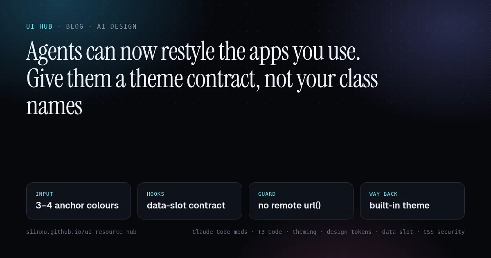
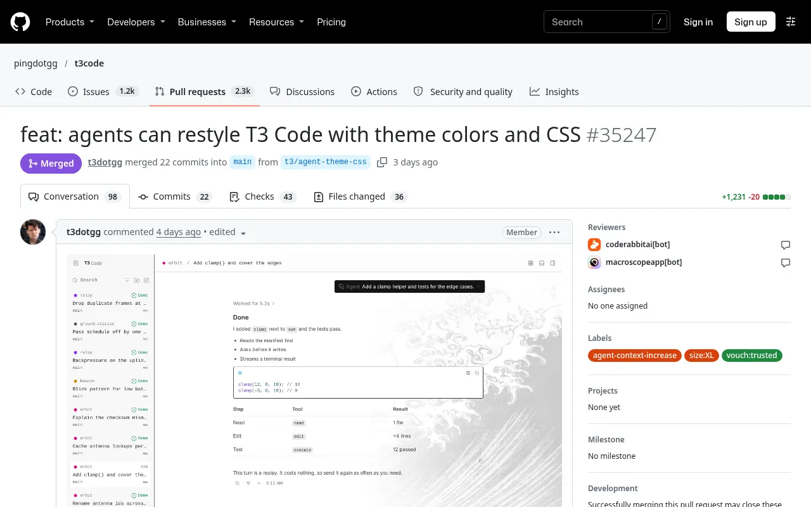
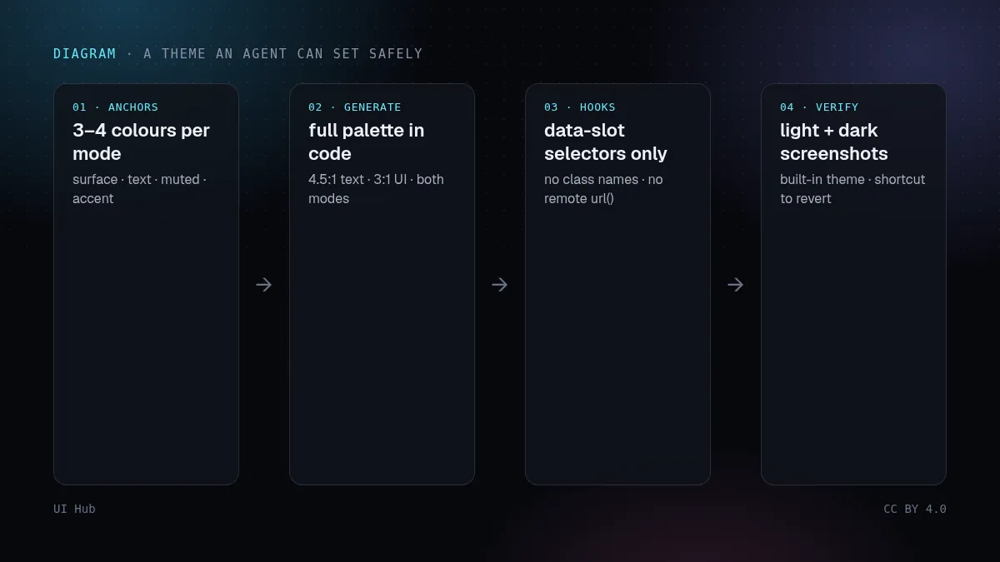

Agents can now restyle the apps you use. Give them a theme contract, not your class namesエージェントがアプリの見た目を書き換え始めた。渡すのはクラス名ではなくテーマの契約だ에이전트가 앱의 모습을 바꾸기 시작했다. 클래스 이름이 아니라 테마 계약을 건네자Ejen kini boleh menggayakan semula aplikasi anda. Beri mereka kontrak tema, bukan nama kelas andaAgent giờ đã tự đổi giao diện ứng dụng. Hãy trao cho chúng một hợp đồng giao diện, đừng trao tên classLes agents peuvent désormais relooker vos apps. Donnez-leur un contrat de thème, pas vos noms de classesLos agentes ya pueden cambiar el aspecto de tus apps. Dales un contrato de tema, no tus nombres de claseAgents gestalten Apps jetzt selbst um. Gib ihnen einen Theme-Vertrag statt deiner Klassennamen
In mid-November 2026 two coding tools let an agent repaint their own interface: Claude Code themes are mods that call $.theme.set from a few anchor colours, and T3 Code merged agent tools that publish a theme with colours and CSS. Under the fun backdrops sits a design-system lesson: anchors that generate a checked palette, stable data-slot hooks, a guard against remote loads, and a one-key way back. What each tool does, our take, a checklist and an agent prompt.2026年11月中旬、2つのコーディングツールがエージェントに自分のUIを塗り替えさせ始めた。Claude Codeのテーマは数色のアンカーから$.theme.setを呼ぶmodで、T3 Codeは色とCSSのテーマを公開するエージェント用ツールをマージした。楽しい背景の下にあるのはデザインシステムの教訓だ。検査済みパレットを生むアンカー、安定したdata-slotフック、外部読み込みの遮断、ワンキーで戻せる道。各ツールの中身、私たちの見解、チェックリストとプロンプト付き。2026년 11월 중순, 두 코딩 도구가 에이전트에게 자기 인터페이스를 다시 칠하게 했다. Claude Code의 테마는 몇 가지 기준 색으로 $.theme.set을 호출하는 mod이고, T3 Code는 색과 CSS로 된 테마를 게시하는 에이전트 도구를 병합했다. 재미있는 배경 아래에는 디자인 시스템의 교훈이 있다. 검사된 팔레트를 만드는 기준 색, 안정적인 data-slot 훅, 원격 로드 차단, 한 번에 되돌리는 길. 각 도구의 내용, 우리의 견해, 체크리스트와 프롬프트 포함.Pada pertengahan November 2026 dua alat pengekodan membenarkan ejen mengecat semula antara muka mereka: tema Claude Code ialah mod yang memanggil $.theme.set daripada beberapa warna sauh, dan T3 Code menggabungkan alat ejen yang menerbitkan tema dengan warna dan CSS. Di bawah latar animasi itu ada pelajaran sistem reka bentuk: warna sauh yang menjana palet yang disemak, cangkuk data-slot yang stabil, pengawal terhadap muatan jauh dan jalan pulang satu kekunci. Apa yang dibuat setiap alat, pandangan kami, senarai semak dan prompt ejen.Giữa tháng 11/2026, hai công cụ lập trình cho phép agent tự vẽ lại giao diện của chính chúng: theme của Claude Code là mod gọi $.theme.set từ vài màu neo, còn T3 Code đã merge công cụ cho agent xuất bản theme gồm màu và CSS. Bên dưới những phông nền vui mắt là một bài học về design system: màu neo sinh ra bảng màu đã kiểm tra, hook data-slot ổn định, chặn tải từ xa và một phím để quay lại. Mỗi công cụ làm gì, nhận định của chúng tôi, kèm checklist và prompt cho agent.Mi-novembre 2026, deux outils de code ont laissé un agent repeindre leur propre interface : les thèmes de Claude Code sont des mods qui appellent $.theme.set à partir de quelques couleurs d’ancrage, et T3 Code a fusionné des outils d’agent qui publient un thème avec couleurs et CSS. Sous les fonds animés se cache une leçon de design system : des ancres qui génèrent une palette vérifiée, des hooks data-slot stables, un garde-fou contre les chargements distants et un retour en une touche. Ce que fait chaque outil, notre avis, une checklist et un prompt.A mediados de noviembre de 2026, dos herramientas de código dejaron que un agente repinte su propia interfaz: los temas de Claude Code son mods que llaman a $.theme.set desde unos pocos colores ancla, y T3 Code fusionó herramientas de agente que publican un tema con colores y CSS. Bajo los fondos animados hay una lección de design system: anclas que generan una paleta comprobada, hooks data-slot estables, una protección contra cargas remotas y una vuelta atrás con una tecla. Qué hace cada herramienta, nuestra opinión, checklist y prompt.Mitte November 2026 ließen zwei Coding-Tools einen Agenten ihre eigene Oberfläche neu einfärben: Claude-Code-Themes sind Mods, die $.theme.set aus wenigen Ankerfarben aufrufen, und T3 Code hat Agent-Tools gemergt, die ein Theme aus Farben und CSS veröffentlichen. Unter den verspielten Hintergründen steckt eine Design-System-Lektion: Anker, die eine geprüfte Palette erzeugen, stabile data-slot-Hooks, ein Schutz gegen externe Ladevorgänge und ein Weg zurück per Tastenkürzel. Was jedes Tool tut, unsere Einschätzung, Checkliste und Agent-Prompt.

本文は英語で表示しています。
본문은 영어로 표시됩니다.
Kandungan dipaparkan dalam bahasa Inggeris.
Nội dung hiển thị bằng tiếng Anh.
Le corps de l’article est en anglais.
El cuerpo del artículo está en inglés.
Der Beitragstext ist auf Englisch.
Two of the most-shared developer-tool changes on X this weekend were about looks, not code. Claude Code’s desktop app can now be repainted by a mod: your colours, plus an animated scene behind the conversation with frosted panels over it, and Anthropic ships an example plugin whose /custom-theme command offers twenty scenes. In the same days T3 Code, the open-source front end for several coding agents, merged a pull request titled “agents can restyle T3 Code with theme colors and CSS” (merged 14 November UTC, nightly builds only for now). Ask the agent to “give T3 Code a solarized theme” and every connected web and desktop client repaints.

It is easy to file this under desktop wallpaper. We think it is the first public, working example of something design-system teams will have to plan for: an interface whose look is changed through an API that an agent calls, by people who never open your design files. The two tools made different choices, and between them they show what a safe theme surface needs.
What each tool actually lets an agent change
- Claude Code: a theme is a mod. There is no theme file. A mod, a small JavaScript or TypeScript module, calls
$.theme.setwhen a session starts, withcolors, an optionalbackdrop, and a colour-scheme override (v2.1.319 or later). Colours come frommakeColors, a helper that builds the whole palette from three anchors per mode:surface-0,text-primaryandtext-muted. It returns aproblemslist, and an entry starting “Desktop won’t paint this theme” means the app refuses it. One theme per session: whichever mod calls last wins, and a call replaces the whole theme. - Claude Code: deeper than colour. Each place Claude Code draws, from the spinner to message rows and the question dialog, is a “render site” a mod may restyle or replace. The permission prompt is deliberately not one.
- T3 Code: a theme is data. A theme is a JSON file. The shortest form needs only
appearance, acanvascolour and anaccent; the app generates the rest, and an optionalcssstring adds rules. Two agent tools,t3_theme_read(themes plus a styling guide) andt3_theme_set(publish and switch), do the work, and only for an agent on the server’s own machine running in Full access. - T3 Code: a published selector contract. The styling guide lists 29 selectors theme CSS may rely on, such as
[data-chat-header]and[data-slot="button"], and a test fails if one disappears from the source. Elements that had no hook got one (data-user-message-bubble,data-slot="project-monogram"). The docs say it plainly: class names change between releases, so targetdata-attributes. - T3 Code: a guard and a way back. Clients drop
@import,image-set()and anyurl()that is not adata:address or an#id, so an imported theme or a prompt-injected agent cannot send the screen to another host. If a rule hides something you need,t3 theme set t3-chator Cmd/Ctrl+Option/Alt+A restores a built-in theme. CSS was capped at 20,000 characters, raised to 50,000 a day later after a community restyle hit the limit.

Our take: theming is becoming an API, so design it like one
For years a theme was a settings page a person clicked through. Now it is a call an agent makes on someone’s behalf, often from a one-line wish. That changes what a design system owes the outside world. Your tokens and hooks stop being internal implementation and become a public contract, with the same duties as any API: few inputs, validation, versioning and an undo.
The two tools split the problem well. Claude Code keeps the input small (three anchors per mode) and lets code generate and check the rest, which is how you stop an agent from shipping grey-on-grey text. T3 Code keeps the escape hatch, raw CSS, but fences it: only named hooks are promised, nothing remote loads, there is a size cap and a keyboard way back. Neither lets a theme touch the trust surface, the permission prompt in Claude Code, remote requests in T3 Code. A product that wants to be restyled safely needs all three layers.
The caveat is in T3 Code’s own limits: the agent cannot see the result, so the guide tells it to make small changes and ask. Claude Code mods, meanwhile, run with your permissions and are not sandboxed, and the docs say so. A theme you install from a stranger is code first and colour second. Read what it hooks before you let it repaint anything.
What to do with this, even if your app has no theme editor
The same contract helps your own coding agents. An agent asked to “make the header calmer” edits whatever it can find; give it anchors, role tokens and named slots, and it edits those instead of hunting through generated class names. Three cheap moves: add data-slot names to the twenty or so parts people actually want to change; generate light and dark palettes from a few anchors with a contrast check in the build; and keep one built-in theme that every override can fall back to.

Checklist: a theme surface an agent can use safely
- Few anchors in, full palette out. Accept background, text, muted text and accent per mode; derive the rest in code.
- Check before you paint. Refuse or flag any generated pair below 4.5:1 for body text and 3:1 for large text and UI parts, in both modes.
- Publish named hooks. List the
data-slotselectors you promise to keep, and add a test that fails when one disappears. - Never promise class names. Utility and hashed classes change every release; say so in the guide.
- Block remote loads in theme CSS. Drop
@import,image-set()and externalurl(); allowdata:only, with a size cap. - Keep trust surfaces out of reach. Permission prompts, payment and security UI are not themeable.
- Ship a way back. A built-in theme, a command and a keyboard shortcut that work even if the theme hides the settings.
- Make the agent look. Require a light and dark screenshot of the result before the theme is kept.
# Paste this to your coding agent
Restyle to .
- Change only our theme contract: anchors in
(surface, text, muted, accent for light and dark) and the data-slot
selectors listed in . Never target class names.
- After generating the palette, report every text/background pair below
4.5:1 (3:1 for large text and controls) and fix it before continuing.
- Theme CSS: no @import, no image-set(), no url() except data: under 10 KB.
- Do not restyle permission, payment or security UI.
- Take light and dark screenshots of <3 key screens>; show them and wait.
Report: anchors chosen, contrast results, selectors touched, and how to
revert to the built-in theme. Related on UI Hub: design tokens for agents, OKLCH colour and dark mode, and linting agents onto your design system.
Two of the most-shared developer-tool changes on X this weekend were about looks, not code. Claude Code’s desktop app can now be repainted by a mod: your colours, plus an animated scene behind the conversation with frosted panels over it, and Anthropic ships an example plugin whose /custom-theme command offers twenty scenes. In the same days T3 Code, the open-source front end for several coding agents, merged a pull request titled “agents can restyle T3 Code with theme colors and CSS” (merged 14 November UTC, nightly builds only for now). Ask the agent to “give T3 Code a solarized theme” and every connected web and desktop client repaints.
It is easy to file this under desktop wallpaper. We think it is the first public, working example of something design-system teams will have to plan for: an interface whose look is changed through an API that an agent calls, by people who never open your design files. The two tools made different choices, and between them they show what a safe theme surface needs.
What each tool actually lets an agent change
- Claude Code: a theme is a mod. There is no theme file. A mod, a small JavaScript or TypeScript module, calls
$.theme.setwhen a session starts, withcolors, an optionalbackdrop, and a colour-scheme override (v2.1.319 or later). Colours come frommakeColors, a helper that builds the whole palette from three anchors per mode:surface-0,text-primaryandtext-muted. It returns aproblemslist, and an entry starting “Desktop won’t paint this theme” means the app refuses it. One theme per session: whichever mod calls last wins, and a call replaces the whole theme. - Claude Code: deeper than colour. Each place Claude Code draws, from the spinner to message rows and the question dialog, is a “render site” a mod may restyle or replace. The permission prompt is deliberately not one.
- T3 Code: a theme is data. A theme is a JSON file. The shortest form needs only
appearance, acanvascolour and anaccent; the app generates the rest, and an optionalcssstring adds rules. Two agent tools,t3_theme_read(themes plus a styling guide) andt3_theme_set(publish and switch), do the work, and only for an agent on the server’s own machine running in Full access. - T3 Code: a published selector contract. The styling guide lists 29 selectors theme CSS may rely on, such as
[data-chat-header]and[data-slot="button"], and a test fails if one disappears from the source. Elements that had no hook got one (data-user-message-bubble,data-slot="project-monogram"). The docs say it plainly: class names change between releases, so targetdata-attributes. - T3 Code: a guard and a way back. Clients drop
@import,image-set()and anyurl()that is not adata:address or an#id, so an imported theme or a prompt-injected agent cannot send the screen to another host. If a rule hides something you need,t3 theme set t3-chator Cmd/Ctrl+Option/Alt+A restores a built-in theme. CSS was capped at 20,000 characters, raised to 50,000 a day later after a community restyle hit the limit.
Our take: theming is becoming an API, so design it like one
For years a theme was a settings page a person clicked through. Now it is a call an agent makes on someone’s behalf, often from a one-line wish. That changes what a design system owes the outside world. Your tokens and hooks stop being internal implementation and become a public contract, with the same duties as any API: few inputs, validation, versioning and an undo.
The two tools split the problem well. Claude Code keeps the input small (three anchors per mode) and lets code generate and check the rest, which is how you stop an agent from shipping grey-on-grey text. T3 Code keeps the escape hatch, raw CSS, but fences it: only named hooks are promised, nothing remote loads, there is a size cap and a keyboard way back. Neither lets a theme touch the trust surface, the permission prompt in Claude Code, remote requests in T3 Code. A product that wants to be restyled safely needs all three layers.
The caveat is in T3 Code’s own limits: the agent cannot see the result, so the guide tells it to make small changes and ask. Claude Code mods, meanwhile, run with your permissions and are not sandboxed, and the docs say so. A theme you install from a stranger is code first and colour second. Read what it hooks before you let it repaint anything.
What to do with this, even if your app has no theme editor
The same contract helps your own coding agents. An agent asked to “make the header calmer” edits whatever it can find; give it anchors, role tokens and named slots, and it edits those instead of hunting through generated class names. Three cheap moves: add data-slot names to the twenty or so parts people actually want to change; generate light and dark palettes from a few anchors with a contrast check in the build; and keep one built-in theme that every override can fall back to.
Checklist: a theme surface an agent can use safely
- Few anchors in, full palette out. Accept background, text, muted text and accent per mode; derive the rest in code.
- Check before you paint. Refuse or flag any generated pair below 4.5:1 for body text and 3:1 for large text and UI parts, in both modes.
- Publish named hooks. List the
data-slotselectors you promise to keep, and add a test that fails when one disappears. - Never promise class names. Utility and hashed classes change every release; say so in the guide.
- Block remote loads in theme CSS. Drop
@import,image-set()and externalurl(); allowdata:only, with a size cap. - Keep trust surfaces out of reach. Permission prompts, payment and security UI are not themeable.
- Ship a way back. A built-in theme, a command and a keyboard shortcut that work even if the theme hides the settings.
- Make the agent look. Require a light and dark screenshot of the result before the theme is kept.
# Paste this to your coding agent
Restyle to .
- Change only our theme contract: anchors in
(surface, text, muted, accent for light and dark) and the data-slot
selectors listed in . Never target class names.
- After generating the palette, report every text/background pair below
4.5:1 (3:1 for large text and controls) and fix it before continuing.
- Theme CSS: no @import, no image-set(), no url() except data: under 10 KB.
- Do not restyle permission, payment or security UI.
- Take light and dark screenshots of <3 key screens>; show them and wait.
Report: anchors chosen, contrast results, selectors touched, and how to
revert to the built-in theme. Related on UI Hub: design tokens for agents, OKLCH colour and dark mode, and linting agents onto your design system.
AI promptAIプロンプトAI 프롬프트Prompt AIPrompt cho AIPrompt IAPrompt de IAKI-Prompt
Paste this into Claude, Cursor, v0 or another assistant to apply this post to your own project. Replace the parts in angle brackets.Claude・Cursor・v0 などのAIアシスタントに貼り付けると、この記事の方法をあなたのプロジェクトに適用できます。山括弧の部分は自分の内容に置き換えてください。Claude, Cursor, v0 같은 AI 도우미에 붙여 넣으면 이 글의 방법을 내 프로젝트에 적용할 수 있습니다. 꺾쇠괄호 안은 내 내용으로 바꾸세요.Tampal ke Claude, Cursor, v0 atau pembantu lain untuk menggunakan kaedah artikel ini pada projek anda. Gantikan bahagian dalam kurungan sudut.Dán vào Claude, Cursor, v0 hoặc trợ lý khác để áp dụng bài này cho dự án của bạn. Thay phần trong dấu ngoặc nhọn bằng nội dung của bạn.Collez-le dans Claude, Cursor, v0 ou un autre assistant pour appliquer cet article à votre projet. Remplacez les parties entre chevrons.Pégalo en Claude, Cursor, v0 u otro asistente para aplicar este artículo a tu proyecto. Sustituye lo que está entre corchetes angulares.In Claude, Cursor, v0 oder einen anderen Assistenten einfügen, um diesen Beitrag auf dein Projekt anzuwenden. Teile in spitzen Klammern ersetzen.
You are a senior UI engineer. Apply the article “Agents can now restyle the apps you use. Give them a theme contract, not your class names” (https://ui.incidental.site/blog/agents-restyle-apps-theme-contract/) to my project.
Key idea: In mid-November 2026 two coding tools let an agent repaint their own interface: Claude Code themes are mods that call $.theme.set from a few anchor colours, and T3 Code merged agent tools that publish a theme with colours and CSS. Under the fun backdrops sits a design-system lesson: anchors that generate a checked palette, stable data-slot hooks, a guard against remote loads, and a one-key way back. What each tool does, our take, a checklist and an agent prompt.
Steps:
1. Read the article and turn its advice into a numbered checklist of concrete, checkable rules.
2. Audit <my page / component / repo> against that checklist; mark each rule PASS or FAIL with file and line.
3. Fix the FAIL items in small batches, using my existing tokens and components. Do not invent APIs; follow the official docs the article links to.
4. Finish with a short list of open questions and anything you could not verify.あなたはシニアUIエンジニアです。記事「エージェントがアプリの見た目を書き換え始めた。渡すのはクラス名ではなくテーマの契約だ」（https://ui.incidental.site/blog/agents-restyle-apps-theme-contract/）の方法を私のプロジェクトに適用してください。
要点：2026年11月中旬、2つのコーディングツールがエージェントに自分のUIを塗り替えさせ始めた。Claude Codeのテーマは数色のアンカーから$.theme.setを呼ぶmodで、T3 Codeは色とCSSのテーマを公開するエージェント用ツールをマージした。楽しい背景の下にあるのはデザインシステムの教訓だ。検査済みパレットを生むアンカー、安定したdata-slotフック、外部読み込みの遮断、ワンキーで戻せる道。各ツールの中身、私たちの見解、チェックリストとプロンプト付き。
手順：
1. 記事を読み、助言を具体的で確認可能な番号付きチェックリストにする。
2. そのチェックリストで <私のページ / コンポーネント / リポジトリ> を監査し、各項目を合格／不合格で示し、ファイルと行番号を書く。
3. 不合格の項目を、既存のトークンとコンポーネントを使って少しずつ修正する。APIを捏造せず、記事がリンクする公式ドキュメントに従う。
4. 最後に未解決の質問と検証できなかった点を挙げる。당신은 시니어 UI 엔지니어입니다. 글 “에이전트가 앱의 모습을 바꾸기 시작했다. 클래스 이름이 아니라 테마 계약을 건네자”(https://ui.incidental.site/blog/agents-restyle-apps-theme-contract/)의 방법을 내 프로젝트에 적용해 주세요.
핵심: 2026년 11월 중순, 두 코딩 도구가 에이전트에게 자기 인터페이스를 다시 칠하게 했다. Claude Code의 테마는 몇 가지 기준 색으로 $.theme.set을 호출하는 mod이고, T3 Code는 색과 CSS로 된 테마를 게시하는 에이전트 도구를 병합했다. 재미있는 배경 아래에는 디자인 시스템의 교훈이 있다. 검사된 팔레트를 만드는 기준 색, 안정적인 data-slot 훅, 원격 로드 차단, 한 번에 되돌리는 길. 각 도구의 내용, 우리의 견해, 체크리스트와 프롬프트 포함.
단계:
1. 글을 읽고 조언을 구체적이고 확인 가능한 번호 목록으로 정리한다.
2. 그 목록으로 <내 페이지 / 컴포넌트 / 저장소>를 점검하고, 항목마다 통과/실패와 파일·줄 번호를 적는다.
3. 실패 항목을 기존 토큰과 컴포넌트로 조금씩 고친다. API를 지어내지 말고 글에 링크된 공식 문서를 따른다.
4. 마지막으로 남은 질문과 확인하지 못한 내용을 정리한다.Anda jurutera UI kanan. Gunakan kaedah artikel “Ejen kini boleh menggayakan semula aplikasi anda. Beri mereka kontrak tema, bukan nama kelas anda” (https://ui.incidental.site/blog/agents-restyle-apps-theme-contract/) pada projek saya.
Idea utama: Pada pertengahan November 2026 dua alat pengekodan membenarkan ejen mengecat semula antara muka mereka: tema Claude Code ialah mod yang memanggil $.theme.set daripada beberapa warna sauh, dan T3 Code menggabungkan alat ejen yang menerbitkan tema dengan warna dan CSS. Di bawah latar animasi itu ada pelajaran sistem reka bentuk: warna sauh yang menjana palet yang disemak, cangkuk data-slot yang stabil, pengawal terhadap muatan jauh dan jalan pulang satu kekunci. Apa yang dibuat setiap alat, pandangan kami, senarai semak dan prompt ejen.
Langkah:
1. Baca artikel dan jadikan nasihatnya senarai semak bernombor yang konkrit dan boleh disemak.
2. Audit <halaman / komponen / repo saya> dengan senarai itu; tandakan setiap peraturan LULUS atau GAGAL dengan fail dan baris.
3. Baiki item GAGAL sedikit demi sedikit menggunakan token dan komponen sedia ada. Jangan reka API; ikut dokumen rasmi yang dipautkan artikel.
4. Akhiri dengan soalan terbuka dan perkara yang tidak dapat disahkan.Bạn là kỹ sư UI cấp cao. Hãy áp dụng bài viết “Agent giờ đã tự đổi giao diện ứng dụng. Hãy trao cho chúng một hợp đồng giao diện, đừng trao tên class” (https://ui.incidental.site/blog/agents-restyle-apps-theme-contract/) cho dự án của tôi.
Ý chính: Giữa tháng 11/2026, hai công cụ lập trình cho phép agent tự vẽ lại giao diện của chính chúng: theme của Claude Code là mod gọi $.theme.set từ vài màu neo, còn T3 Code đã merge công cụ cho agent xuất bản theme gồm màu và CSS. Bên dưới những phông nền vui mắt là một bài học về design system: màu neo sinh ra bảng màu đã kiểm tra, hook data-slot ổn định, chặn tải từ xa và một phím để quay lại. Mỗi công cụ làm gì, nhận định của chúng tôi, kèm checklist và prompt cho agent.
Các bước:
1. Đọc bài và biến lời khuyên thành danh sách kiểm tra đánh số, cụ thể, kiểm chứng được.
2. Rà soát <trang / component / repo của tôi> theo danh sách đó; ghi ĐẠT hoặc KHÔNG ĐẠT kèm tệp và dòng.
3. Sửa các mục KHÔNG ĐẠT theo từng đợt nhỏ, dùng token và component sẵn có. Không bịa API; làm theo tài liệu chính thức mà bài viết dẫn tới.
4. Kết thúc bằng các câu hỏi còn mở và những điểm chưa xác minh được.Tu es ingénieur UI senior. Applique l’article « Les agents peuvent désormais relooker vos apps. Donnez-leur un contrat de thème, pas vos noms de classes » (https://ui.incidental.site/blog/agents-restyle-apps-theme-contract/) à mon projet.
Idée clé : Mi-novembre 2026, deux outils de code ont laissé un agent repeindre leur propre interface : les thèmes de Claude Code sont des mods qui appellent $.theme.set à partir de quelques couleurs d’ancrage, et T3 Code a fusionné des outils d’agent qui publient un thème avec couleurs et CSS. Sous les fonds animés se cache une leçon de design system : des ancres qui génèrent une palette vérifiée, des hooks data-slot stables, un garde-fou contre les chargements distants et un retour en une touche. Ce que fait chaque outil, notre avis, une checklist et un prompt.
Étapes :
1. Lis l’article et transforme ses conseils en une liste numérotée de règles concrètes et vérifiables.
2. Audite <ma page / mon composant / mon dépôt> avec cette liste ; indique OK ou KO pour chaque règle, avec fichier et ligne.
3. Corrige les points KO par petits lots, avec mes tokens et composants existants. N’invente pas d’API ; suis la documentation officielle citée par l’article.
4. Termine par les questions ouvertes et ce que tu n’as pas pu vérifier.Eres un ingeniero de UI sénior. Aplica el artículo “Los agentes ya pueden cambiar el aspecto de tus apps. Dales un contrato de tema, no tus nombres de clase” (https://ui.incidental.site/blog/agents-restyle-apps-theme-contract/) a mi proyecto.
Idea clave: A mediados de noviembre de 2026, dos herramientas de código dejaron que un agente repinte su propia interfaz: los temas de Claude Code son mods que llaman a $.theme.set desde unos pocos colores ancla, y T3 Code fusionó herramientas de agente que publican un tema con colores y CSS. Bajo los fondos animados hay una lección de design system: anclas que generan una paleta comprobada, hooks data-slot estables, una protección contra cargas remotas y una vuelta atrás con una tecla. Qué hace cada herramienta, nuestra opinión, checklist y prompt.
Pasos:
1. Lee el artículo y convierte sus consejos en una lista numerada de reglas concretas y comprobables.
2. Audita <mi página / componente / repositorio> con esa lista; marca cada regla como CUMPLE o NO CUMPLE con archivo y línea.
3. Corrige los puntos que no cumplen en lotes pequeños, usando mis tokens y componentes actuales. No inventes APIs; sigue la documentación oficial que enlaza el artículo.
4. Termina con las preguntas abiertas y lo que no pudiste verificar.Du bist Senior-UI-Engineer. Wende den Artikel „Agents gestalten Apps jetzt selbst um. Gib ihnen einen Theme-Vertrag statt deiner Klassennamen“ (https://ui.incidental.site/blog/agents-restyle-apps-theme-contract/) auf mein Projekt an.
Kernidee: Mitte November 2026 ließen zwei Coding-Tools einen Agenten ihre eigene Oberfläche neu einfärben: Claude-Code-Themes sind Mods, die $.theme.set aus wenigen Ankerfarben aufrufen, und T3 Code hat Agent-Tools gemergt, die ein Theme aus Farben und CSS veröffentlichen. Unter den verspielten Hintergründen steckt eine Design-System-Lektion: Anker, die eine geprüfte Palette erzeugen, stabile data-slot-Hooks, ein Schutz gegen externe Ladevorgänge und ein Weg zurück per Tastenkürzel. Was jedes Tool tut, unsere Einschätzung, Checkliste und Agent-Prompt.
Schritte:
1. Lies den Artikel und mach aus den Empfehlungen eine nummerierte Liste konkreter, prüfbarer Regeln.
2. Prüfe <meine Seite / Komponente / mein Repo> anhand dieser Liste; markiere jede Regel mit OK oder FEHLT, mit Datei und Zeile.
3. Behebe die fehlenden Punkte in kleinen Schritten mit meinen vorhandenen Tokens und Komponenten. Erfinde keine APIs; folge der offiziellen Doku, die der Artikel verlinkt.
4. Schließe mit offenen Fragen und dem, was du nicht prüfen konntest.References参考文献참고 자료RujukanNguồn tham khảoRéférencesReferenciasQuellen
- Draw in the interface with a mod (themes and backdrops) — Claude Code Docs (Anthropic)
- Mods overview — Claude Code Docs (Anthropic)
- Mods reference — Claude Code Docs (Anthropic)
- Claude Code Desktop Themes: Build One With Mods — vanja.io
- feat: agents can restyle T3 Code with theme colors and CSS (#35247) — GitHub · pingdotgg/t3code
- feat(themes): theme CSS can hold 50,000 characters (#36656) — GitHub · pingdotgg/t3code
- Appearance (custom themes, custom CSS, ask an agent) — GitHub · pingdotgg/t3code docs
- T3 Code lets your agent restyle the app with theme colors and CSS — Creators Toolbox
- T3 Themes community gallery — t3themes.com
- Theme Color reference — Visual Studio Code docs
- Design Tokens Format Module (draft) — W3C Design Tokens Community Group
- Understanding SC 1.4.3: Contrast (Minimum) — W3C WAI
- Attribute selectors — MDN Web Docs
Related posts関連記事관련 글Artikel berkaitanBài liên quanArticles liésArtículos relacionadosÄhnliche Beiträge

Motion that feels right: purpose, duration, easing, restraintしっくりくるモーション：目的・時間・イージング・抑制자연스러운 모션: 목적, 시간, 이징, 절제Gerakan yang terasa betul: tujuan, tempoh, easing, kawalanChuyển động đúng cảm giác: mục đích, thời lượng, easing, tiết chếUn mouvement juste : intention, durée, easing, retenueMovimiento que se siente bien: propósito, duración, easing, contenciónBewegung, die sich richtig anfühlt: Zweck, Dauer, Easing, Zurückhaltung
Most UI motion should be under 300ms, ease-out, and skipped for frequent actions. Spectacle belongs on marketing pages, not in tools.UIモーションは300ms以内・ease-out、頻繁な操作には付けない。UI 모션은 300ms 이하, ease-out, 잦은 동작엔 생략.Kebanyakan gerakan UI di bawah 300ms, ease-out, dan dilangkau untuk tindakan kerap.Hầu hết chuyển động dưới 300ms, ease-out, bỏ qua với thao tác thường xuyên.Moins de 300 ms, ease-out, et rien pour les actions fréquentes.Menos de 300 ms, ease-out, y nada en acciones frecuentes.Unter 300 ms, ease-out, und keine Animation für häufige Aktionen.

Dark mode done right: tokens, elevation and contrast正しいダークモード：トークン・階層・コントラスト다크 모드 제대로: 토큰, 고도, 대비Mod gelap yang betul: token, ketinggian dan kontrasLàm dark mode đúng: token, độ nổi và độ tương phảnUn mode sombre réussi : tokens, élévation et contrasteModo oscuro bien hecho: tokens, elevación y contrasteDark Mode richtig: Tokens, Elevation und Kontrast
Dark mode is a second palette, not an inverted one. Use semantic tokens, lighter surfaces for elevation, and desaturated accents.ダークモードは反転ではなく第二のパレット。意味トークン、明るい面で階層、彩度を下げたアクセント。다크 모드는 반전이 아니라 두 번째 팔레트. 시맨틱 토큰, 밝은 면으로 고도 표현.Mod gelap ialah palet kedua, bukan terbalik. Guna token semantik dan permukaan lebih cerah untuk ketinggian.Dark mode là bảng màu thứ hai, không phải đảo màu. Dùng token ngữ nghĩa, bề mặt sáng hơn để thể hiện độ nổi.Une seconde palette, pas une inversion. Tokens sémantiques, surfaces plus claires pour l'élévation.Una segunda paleta, no una inversión. Tokens semánticos y superficies más claras para la elevación.Eine zweite Palette, keine Invertierung. Semantische Tokens, hellere Flächen für Elevation.

Accessibility in AI-generated UI: the checks models skipAI生成UIのアクセシビリティ：モデルが飛ばすチェックAI 생성 UI의 접근성: 모델이 빠뜨리는 점검Kebolehcapaian dalam UI jana AI: semakan yang dilangkau modelKhả năng tiếp cận trong UI do AI tạo: những kiểm tra mô hình bỏ quaAccessibilité de l'UI générée par IA : les vérifications oubliéesAccesibilidad en UI generada por IA: las comprobaciones que se saltanBarrierefreiheit in KI-generierter UI: die übersprungenen Checks
Generated UIs look fine and fail keyboards and screen readers. Start from accessible primitives, then audit against WCAG 2.2.見た目は良くてもキーボードやスクリーンリーダーで失敗。アクセシブルな基盤からWCAG 2.2で監査。보기엔 괜찮아도 키보드·스크린리더에서 실패. 접근성 기반에서 시작해 WCAG 2.2로 점검.Nampak baik tetapi gagal untuk papan kekunci dan pembaca skrin. Mula dengan primitif boleh capai, audit dengan WCAG 2.2.Trông ổn nhưng hỏng với bàn phím và trình đọc màn hình. Dùng primitive dễ tiếp cận, kiểm theo WCAG 2.2.Belles mais inutilisables au clavier. Partir de primitives accessibles, auditer selon WCAG 2.2.Se ven bien pero fallan con teclado y lector. Parte de primitivas accesibles y audita con WCAG 2.2.Sieht gut aus, scheitert an Tastatur und Screenreader. Mit barrierefreien Primitives starten, nach WCAG 2.2 prüfen.